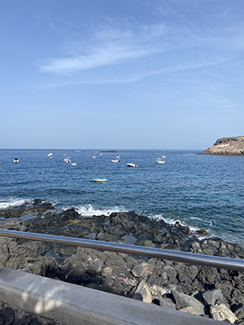
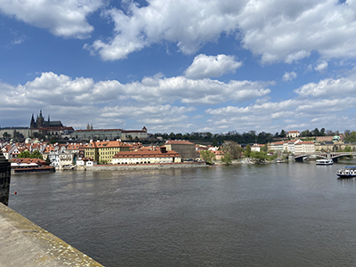

Welkom
Hallo allemaal welkom op mijn website over verschillende vakantiebestemmingen. Hier op deze site ga ik verschillende bestemmingen benoemen waar ik ben geweest, maar ook waar ik nog niet ben geweest, maar leuk lijkt om naartoe te gaan.
Ik ben sabrina en ben naar verschillende plekken op vakantie geweest en ik heb gemerkt dat ik het horen van ervaringen van anderen zo leuk vind dat ik dat ook met jullie wil gaan delen.
Wie ben ik?
Mijn favoriete vakantie bestemmingen
Zelf ben ik een aantal keer op vakantie geweest naar een aantal landen waar ik verschillende toffe ervaringen van heb meegekregen en dat zijn de volgende:
- Cochem, Duitsland
- Costa Adeje, Tenerife
- Praag, Tsjechie
Dit vond ik erg leuk dus wil ik daarom mijn ervaringen daarover met jullie delen.
Cochem, Duitsland

Afgelopen zomer ben ik in Cochem geweest, dit is een plaatje aan de rivier de moezel. Wij waren in de buurt van Cochem zijn verbleven, in een dorpje genaamd Klotten, waar wij bij een lieve vrouw in een appartement mochten slapen. Tijdens dit verblijf hebben wij een aantal excursies gedaan,
je kan daar veel wandelen en door de bergen lopen. Vergeet je wanderschoenen niet
Als je Cochem zelf ingaat kan je lekker schoppen bij lokale winkeltjes.
Waar je op moet letten als je in Duitsland bent en een ijsje, appeltaart of warme chocolade melk neemt en je besluit er een toef slagroom op te nemen, dit is 9/10 keer ongezoet.
Costa Adeje, Tenerife

Hou je van warm weer, dan is tenerife ook wat voor jou. Op dit eiland zijn er veel dingen te beleven en kan je veel activiteiten doen ondanks dat het er warm is.
Zo kan he verschillende excursies doen, bijvoorbeeld naar vulkaan El teide gaan, dit is een all in trip met diner en een drankje op de top van El teide. Andere aanraders zijn:
- Een lokale tuktuk tour doen, hier wordt je de stad Costa Adeje mee ingenomen en geeft de je chaffeur een zogezegde rondleiding met verschillende historische verhalen over het stadje.
- Een boottocht om een quatamaran, dit is een enorme boot waar je dan met een grote groep de zee op gaat. Heb je geluk dan zie je ook nog walvissen zwemmen.
- Voor de echte dare devils onder ons kan je ook een ritje op de jetski maken, je gaat dan de zee op met een aantal andere en raast dan lekker de zee over.
- En niet te vergeten de paella en de sangria zijn daar ook het proberen waard.


Praag, Tsjechie

Praag in Tsjechie, wauw dit is een van de prachtigste steden waar ik ooit ben geweest. De architectuur daar is al een mooi gezicht, de tuin van het senaat met prachtige kunstwerken. En dan heb ik het nog niet eens gehad over het uitzicht daar. Wauw! Het is een hele beleving.
De plekken waar je gewoon even langs geweest moet zijn voor je weer vertrekt zijn:
- Charles bridge, is een beroemde brug over de Vltava (Moldau) in Praag. De brug is 516 meter lang en bijna 10 m breed. Op de brug staan 30 standbeelden. Dus echt een kijkje waard.
- The dancing house, Het gebouw staat op een opvallende plaats aan de rivier de Moldau, waar voordien een gebouw had gestaan dat tijdens de Tweede Wereldoorlog werd vernietigd. De bouw van het Dansende Huis begon in 1994 en werd afgerond in 1996. Maar het is leuk om er even te kijken, zo apart is het. Het gebouw staat scheef.
- Ook wat een aanrader is, is het ijs daar. Je krijgt een versgebakken hoorntje met een smaak naar keuze, vulling naar keuze en vervolgens ook een ijssoort als topping. Dit is echt het proberen waard, maar doe dit niet op een volle maag.